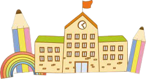
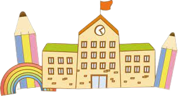
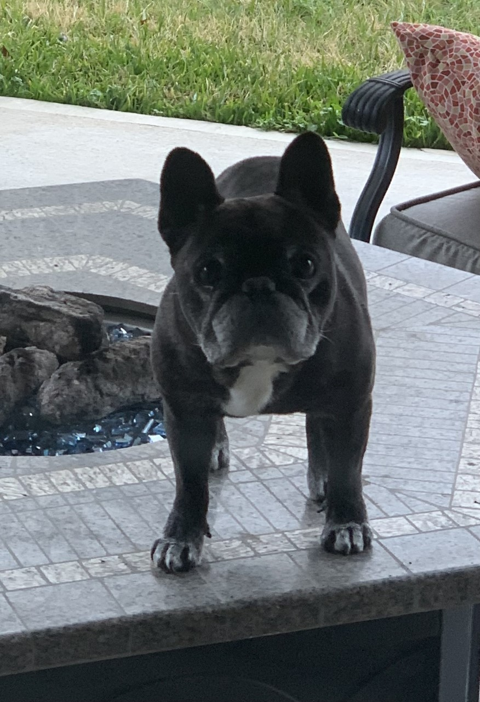
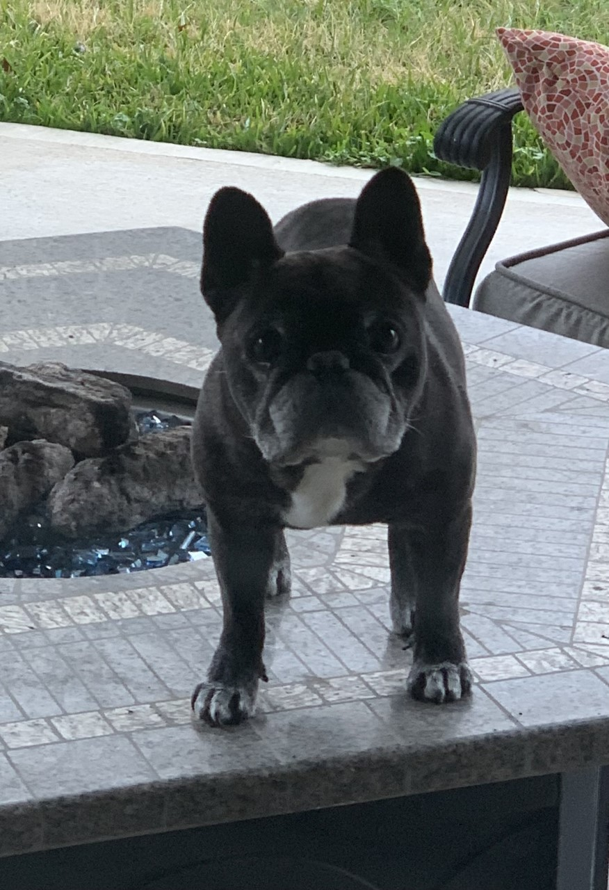

Yo soy Ms. Machado
Maestra Bilingüe de Kindergarten

Maestra Bilingüe de Kindergarten

Me llamo Ms. Machado y estoy super contenta de ser su maestra de Kinder este año escolar 2022-23. Trabajando en equipo haremos que este año sea increíble. ¡Este año aprenderemos números, figuras, letras, sonidos, a leer y a escribir! También aprenderemos a cortar, pegar, dibujar y colorear. Aprenderemos cómo ser buenos estudiantes en la escuela y cómo ser amigos de nuestros compañeros de clase. ¡Aprenderemos a ser respetuosos, responsables y seguros! ¡Y muchísimo más!
 

Este es mi segundo año enseñando en Emery Elementary y tengo 17 años en educación. Me gradué en Louisiana State University en el 2004. Tengo dos hijos encantadores de 21 años, mi hija Ana está en la universidad estudiando para ser Ingeniera y mi hijo Andrés está estudiando Mercadotecnia. Mi compañero maravilloso se llama David y también tenemos un perrito French bulldog llamado Blackie de 12 años.
DRINK: Dr, Pepper, Green tea frappuccino de Starbucks.
COLOR: azul
SPORTS TEAM: LSU Tigers
SNACKS: popcorn and TWIX
SHOP: Express y Target
HOBBIES: ir a la playa, pasear y ver películas. .
La forma mas fácil y rápida para contactarme es con la aplicación Remind, también me puede enviar un email ó llamar a la escuela al número (281) 855-9080.
Remind© Edith Machado.